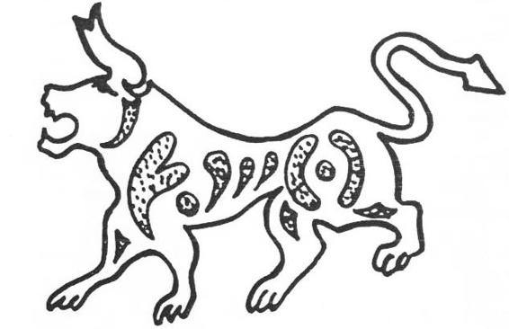

Uygur harfleri ile yazılmış olan bu Oğuz destanı diyebiliriz ki, Oğuz destanlarının en güzeli ve en değerlisidir.191 Maalesef bu destanın da başından, ortasından ve sonundan, en önemli diyebileceğimiz bazı parçalar kaybolmuştur. Bu destanda, İslamiyet’in, hemen hemen hiç bir izi yok gibidir. Bununla beraber artık bu çağda İran edebiyatının ve dilinin tesirleri, Türkler arasında yayılmaya ve yerleşmeye başlamıştı. Meselâ, bu destanda, ateş, yakut, çerag, v. s. gibi, Farsça veya Arapça sözlerin, hiç yadırganmadan ve alışkanlıkla kullanılmış olmaları, bizi bu yargıya kolaylıkla götürebilir.
Yine aynı destanın, Çingiz-Han çağından sonra yazıldığı hususunda da hemen hemen hiç bir şüphe yoktur. Çoğunun asılları Türkçe sözlerden gelmesine rağmen, bilhassa Çingiz-Han'dan sonra kurulan Türk devletlerinde kullanılan birçok devlet deyimlerinin bu destanda kullanılmış olmaları, bizi bu sonuca götürmektedir. Mesela, tüşimel nöker, ağa, soyurgamak gibi deyimleri, daha ziyade, Çingiz-Han çağından sonra kurulmuş olan Türk devletlerinde daha yaygın olarak görüyoruz. "Masa" anlamına gelen şire sözü de Moğolca bir sözdür. Bazı kişi adları da Moğolca eklere göre değiştirilmiştir. Mesela Türkçe Temir-lig-Kagul yerine, Moğolca eklerle Tömürtü-Kagul şekli kullanılmıştır.
Çingiz-Han çağında Oğuz-Kağan destanına büyük bir önem verildiğini biliyoruz. Reşideddin'in, Çingiz-Han ve hanedanının tarihini yazmasına rağmen, kitabının başına Oğuz-Han destanını almasındaki derin manayı anlamak lâzımdır. Yine çok sayın Prof. Z. V. Togan'ın dedikleri gibi, Oğuz destanının Moğolca yazılmış bir nüshasının varlığını da düşünmek, bu konuları iyi bilenler için en normal bir şeydir. Sayın üstadın, bu Uygurca Oğuz destanının, Moğolcadan Türkçeye yeniden çevrilmiş olabileceği hakkındaki fikirleri de, her zaman için varid olabilir.
Bilindiği üzere her efsanenin yeni bir nüshası, o çağda kullanılan sözleri, tarih ve coğrafya bilgilerini de içinde toplar. Bu bakımdan, Farsça Oğuz destanları ile Ebülgazi'nin eserlerindeki destanlar da farklıdır. Çünkü Ebülgazi, kendi muhitinden ve bilgisinden bunlara birçok şeyler katmıştır. Dede Korkut destanları da öyledir. Fakat bu mitolojinin dayandığı bir öz ve bir temel vardır ki, bu öz biç değişmez. Bize düşen de bunu göstermektir. Yoksa Oğuz-Han'ın Cürçet ve Altın-Han'a karşı yapılan akınları, Çingiz-Han'ın 1214 Çin seferidir diye, Marquart gibi kesin konuşmak, bizi her zaman için gülünç durumlara düşürür.192
Oğuz-Han’ın babası: Çok geniş bölgelere yayılmış olan Türkler arasında Oğuz-Han'ın babası hakkında birçok ayrı anlatılışlar vardır. Elimize gelen Uygur yazısı ile yazılmış Oğuz destanında Oğuz'un babası, Ay-Kağan olarak adlandırılıyordu. Batı Türklerindeki anlatışlara göre ise, Oğuz-Han'ın babası Kara-Han idi. Çok iyi biliyoruz ki Uygurlar, M. S. 763’den itibaren Mani dinini kabul etmiş ve onun etkileri altına girmişlerdi. Nitekim Uygurların menşe efsanesinde de Mani dininin çok derin etkileri görülmektedir. Bu yönleri Uygurların menşe efsanesi ile ilgili bölümlerde inceleyeceğiz. Bildiğimiz gibi, eski Türk dininde Gök ve Güneş birinci derecede öneme sahip idiler. Türkler Mani dinini kabul edince, Ay birinci sıraya geçti. Çünkü Mani dininin prensiplerine göre ay, hepsinden önemli idi.
Oğuz-Han'ın doğumundan bahseden Uygur yazılı Oğuz destanı: "Bir gün Ay-Kağan’ın gözleri aydın oldu. Bir erkek oğlu oldu," diye söze başlar. Türklerin bildikleri tek bir Ay-Han varsa, o da Oğuz-Han'ın ikinci oğlu olan Ay-Han'dı. Diğer hiç bir kaynakta böyle bir bilgi yoktur. Bu zamana kadar Türkler, Tanrıya "Gök-Tanrı" derler iken, Manihaizm’in girişinden sonra "Ay-Tanrı" demeye başlamışlardı. Bundan önceki Türk hükümdarlarının Unvanları hep Gök Tanrı ile başlarken, bundan sonra Uygur hükümdarların, "Ay Tanrıda kut bulmuş.." vs. gibi başlıklarla adlandırıldığını görüyoruz.
Bütün bunlar bize gösteriyor ki Uygurlar, Oğuz destanının esas konusuna dokunamamış ve planını değiştirememişlerdi. Çünkü bu, millî an'aneden ayrılmak demekti. Buna rağmen, yeni öğrendikleri şeyleri ve prensipleri, araya sokuşturmaktan da geri durmamışlardı. Yukarıda da söylediğimiz gibi, Uygur yazılı Oğuz destanı, Çingiz-Han'dan sonra yazılmış olmalıdır. Çünkü içinde "Nöker" vs. gibi, Çingiz-Han Devletinde kullanılan terimler de kullanılmıştır. Fakat şunu da iyi biliyoruz ki Çingiz-Han çağında yazılmış olan eserlerde, Oğuz-Han'ın babası hep "Kara-Han" olarak gösterilmiştir. Bu yönü, Farsça tarihlerden çok iyi olarak öğreniyoruz. Eser, XIII. asırdan sonra yazılmış olmalıdır. Fakat konu çok eskidir. Destanın planı ve orijinal kopyası belki de Uygurlar Orhun nehri boylarında yaşarlar iken, yani M. S. 840’dan önce meydana getirilmişti. Ay-Han, bu sırada Oğuz-Han'ın babası yerine geçmiştir. Tıpkı Dede Korkut Kitabı gibi elden ele, yazıla yazıla da, bize kadar bugünkü şekli ile gelmişti. Öyle anlaşılıyor ki değişiklik, yalnızca Oğuz'un babası üzerinde yapılmıştır. Yabancı dinler, ne de olsa Türklerin eski dinlerini ve an'anelerini, kalplerinden ve zihinlerinden sökememişlerdi. Aynı destanda bile Oğuz-Han, yaptığı konuşmada Tanrı'dan bahsederken, hep eski Türk geleneği ile "Gök-Tanrı" diye gelmiş ve "Ay-Tanrı" demek, yeni dinleri ne olursa olsun, onlara zor gelmişti. Batı Türklerinin bildiği Oğuz Destan’ının en orijinal kaynağı, Reşideddin'in eseridir. Burada da İslamiyet’in tesirlerine rağmen, Oğuz-Han'ın Sema, yani göğe inandığı ve annesini de bu inanca sahip olmak için zorladığı yazılmıştır. Biz burada tercüme ve açıklamalarımızı yaparken, her şeyden önce destanın metnine iyice girmeye ve onu yaşamaya dikkat ettik. Metni anlamadan büyük teorilere girişmek doğru olamaz. Meselâ bu destanın metnini anlayabilecek kadar çok iyi bir eski Türkçe bilmeyen Rus Bernştam, Ay-Han konusunda bazı garip teoriler ileri sürmüştür. Ona göre Ay-Han, eski Babil ilahlarından "İştar" olmalıdır. İştar, bir Tanrıça ve ay ilâhı idi. Ona göre Ay-Han, Oğuz-Han'ın annesi idi. Uygurlar onun baba tarafını unutmuşlarmış da, anne tarafıyla tanımışlar imiş. Bunun için de Oğuz-Han'ın annesi Ay-Han, ancak Babil ilâhı İştar ile karşılaştırılabilirmiş.193 Yine ona göre Ay-Han, kadınları koruyan Göktürk ana-tanrısı "Umay" ile karşılaştırılabilirmiş. Tabii olarak bu yanlışlıklar, eski Türkçe metni iyice okuyup anlayamamaktan ileri geliyordu. Bernştam, "Bir erkek oğul doğurdu" cümlesini anlayamamıştır. Bu cümle, "Bir erkek oğlu doğurdu" şeklinde düzeltilmelidir ve böyle anlaşılmalıdır. Destan gayet açık söylemektedir : "Ay-Han'ın gözü aydın oldu, bir erkek oğlu doğurdu". "Gözü aydın oldu" sözünü, Prof. Bang ile Rahmeti Bey de anlayamamış ve bu ifadeyi açıklamak için uzun örnekler vermişler ve derin bir incelemeye girmişlerdir. Hâlbuki Rus Şerbak194, Anadolu’daki "Gözün aydın" deyimini vererek, bütün meseleyi halletmiştir. Bütün bunlarla demek istiyoruz ki, gramer kitabı ve bir sözlükle metinleri anlamanın imkânı yoktur. 0 metni duymak ve yaşamak lâzımdır. Aksi halde, "Türklerde Babil ilâhı İştar'ın görünüşü!" gibi, garip teorilerin önüne geçilemez.
Şamanist olan Türk ve Moğol kavimlerinde de genel olarak, Güneş- Anne ve Ay-Baba'dan söz açılır. Yani Güneş dişi ve ay da erkek olarak düşünülmüştü. Bazen bunlara Ay-Han ve Gün-Han adları da verilmiştir.195 Altaylarda ve Yenisey Nehri boylarında söylenen efsanelerde, erkek kahramanların çoğunun adı da Ay-Han'dı.196
Türk mitolojisinde Ay'ın erkek, Güneş'in de dişi olduğunu söylemiştik. Buna rağmen aydan gebe kalma olayı Türk efsanelerinde çok nadirdir. Yalnız Han-nâme, Çingiz-Han'ın atalarından Alan-Kowa (Alan-Ko'a)nın gebe kalma olayından söz açarken şöyle der : "Alan- Kowa gece evinde yatarken, gece yarısı evden içeri parlak bir ay giriyor ve kız da bu Ay’dan gebe kalıyor. Ay çadırdan içeri girerken, arslan veya Kurt gibi hayvana benzeyen şeyler de görülüyor197", Han-nâme'de bu konu, bir kaç defa tekrarlanır ve kızın Ay’dan gebe kaldığı ısrarla söylenir. Han-nâme yazarı İmâmî'nin böyle ısrarla anlatışında, Türklerin inanışlarının bir tesiri olabileceği de düşünülebilir. Ancak Moğolların Gizli Tarihi'ndeki, Alan-Ko'a'nın gebe kalışı ile ilgili bölümün manası da henüz daha iyice anlaşılmamıştır. Bu metni de yine üstat P. Pelliot aydınlığa kavuşturmuştur. Alan-Kowa'nın gebe kalma olayı: "Sızan198 ışıktan girerek karnını okşuyor ve onun parlak ışığı karnının (derinliklerine) işliyordu. (Çadırdan) çıkarken de güneş veya ayın huzmelerine tıpkı sarı bir köpek gibi tırmanarak çıkıyordu.199"
Bu metinde de görülüyor ki, Alan-Kowa'nın gebe kalmasında birinci derecede rol oynayan şey, ay ışıkları ve bu ışıklarla inen, sembolik bir hayvan şekline girmiş olan Tanrı'nın kendisi veya elçisidir. Metinde "güneş" sözünün geçmiş olmasına rağmen, gebe kalma olayının gece ve ay ışığı vasıtasıyla meydana gelmesi, bu meselede aya daha fazla önem kazandırır.
Aybek üd-Devâdârî'nin, Türklerin menşei hakkında anlattığı efsanede de, sellerin ve yağmurların sürüklediği balçıklar bir mağaraya doluyorlar. Bu mağara, bir nevi ana rahmi vazifesi görüyor. Bundan sonra, toprak, su, güneşin ısısı ile meydana gelen ateş tesiri ve esen rüzgâr ile dokuz ay sonra bir çocuk meydana geliyor ve bu erkek çocuğa da Ay-Atam adı veriliyor. Bu efsanede birçok dış tesirler ve inançlar vardır. Fakat önemli olan, çocuğun adının Türkçe ve Ay-Atam olmasıdır.
Bektaşi şairi Abdal Musa, bilgi ve tasavvufta derya, göl ve umman, yani okyanus derecelerini birbirinden ayırabilmektedir. Abdal Musa, üstadı Hacim Sultan'ın yanında kendisini bir göl gibi görürdü:
"Yedi derya bizim keşkülümüzde,
"Hızır İlyas bizim haldaşumuzdur,
"Yedi Tamu bize nevbahar oldu,
"Hacim umman ise, biz de göldenüz,
"Ne zerrece günden, ne hod aydanuz,
"Sekiz uçmak içindeki köydenüz!"
Abdal Musa
Bu Bektaşi şiiri Türk kültür tarihi bakımından da çok büyük bir önem taşımaktadır. "Yedi derya", "Yedi Tamu", "Sekiz uçmak" gibi deyimler gerçi İran edebiyatının tabirleridir. Fakat Türkçenin çok eski özelliklerini de taşırlar. Bu tabirler Osmanlı çağında olduğu gibi, İran edebiyatının âdi bir taklidi değil; asırlarca Türk dili ve ruhu ile yoğrulmuş ve Türklüğün malı olmuş gibidirler. Zaten Abdal Musa bir mısraında aslını da şöyle anlatıyor:
"Biz, Horasan elleründe. baydanuz".
Oğuz-Han'ın yüzünün rengi: Yine Uygurca Oğuz destanında, Oğuz Han'ın doğuşundan söz açılırken, şöyle denir : "Oşul ogulnıng önglügi çırağı kök erdi". Şimdiye kadar bu metin üzerinde duranlar ve onun tercümesini yapanların hepsi, "önglügi çırağı" deyimini, "yüzü" olarak tercüme etmişlerdir.200 Şunu unutmamalıyız ki, bu günkü Türkçede "yüz" sözünün iki anlamı vardır. Birincisi her gün kullandığımız maddî yüzdür. Yerin yüzü, kumaşın yüzü, evin yüzü v.s. gibi. Bu, "ön" anlamına gelir ki, eski Türkçedeki karşılığı da, "öng" idi. Bütün lehçelerde de böyledir.201 Bu maddî deyim, bugünkü Türk lehçelerinde de çoğu zaman, "öng yüz" diye, iki aynı manada kelimeyi yanyana getirmek sureti ile kullanılmaktadır.202 Türkçede "yüz" kelimesi insanla ilgili olunca, o zaman manevî bir değer kazanırdı. İşte yine bu manevî değerinden dolayı olsa gerektir ki, "öng" sözü, eski Türkçede renk anlamına da gelirdi.203 Oğuz destanında Oğuz-Han'ın yüzünden bahsedilirken, yalnızca öng sözü kullanılmamış; bilâkis, önglügi de denmiştir. Eğer, maddî olarak, yalnızca "yüzü" denmek istenseydi, buna karşılık öngi (— öng-i) demek, kâfi gelecekti. Eski Türkçede önglüg şekli, yalnızca "renkli" anlamına, bir sıfat olarak kullanılmıştır. Mesela, "Yaşıl önglüg ton", "yeşil renkli elbise" demektir.204 İnsan yüzü, güzelliği, çirkinliği, kötülüğü, iyiliği, hatta insanın iç âlemini yansıtan bir ayna gibidir. Meselâ Türkçedeki beniz sözünü ele alalım ve onun ifade ettiği manaları hatırlayalım. Beniz'in eski Türkçesi mengiz idi.205 Mengizlendi demek, "benizlendi, güzelleşti" anlamına geliyordu.206 Yani bütün bunlarla şunu söylemek istiyoruz: Eski ve yeni Türkçede öng, "ön, cephe, yüz" demektir. Fakat önglüg (— öng-lüg) şekli, yalnızca renkle ilgili deyimlerde geçer. Türkçe beniz sözünde olduğu gibi, "renk, güzellik, çirkinlik, iyilik, kötülük" gibi bütün manevi anlamları da kapsar. Tabii olarak, gerekli ekler ilâve edilmek suretiyle bu manalar verilirdi.
Çırag sözüne gelince, bu da Farsçadan girmiş bir söz olmalıdır, öyle anlaşılıyor ki eski Türkçede çırag sözü, yine Farsçadan Türkçeye girmiş olarak, çehre sözü karşılığında kullanılıyordu Çırag sözü, "yüz" karşılığı olarak, Harezm-Şah'lar devletinden itibaren Türkçeye girmiş bulunuyordu.207 Güney Sibirya ve Altay lehçelerinde ise bu öz, çırai, çıray şeklinde söylenirdi.208 Açıkçası, hangisinin kök ve asıl olduğunu burada söyleyecek durumda değiliz.209
Bu duruma göre, "önglügi çırağı kök erdi" cümlesini "benzi, gök renkte idi" şeklinde tercüme etmek lâzımdır. O zaman beniz sözünde, tabii olarak yüzün rengi de bahis konusu olacaktır.
Yine aynı Oğuz destanında, Oğuz Han'a zaman zaman kılavuzluk edip, yol gösteren ve Tanrı tarafından gönderilen Kutsal Kurt’tan söz açılırken, hep "gök tüylü, gök yeleli" deyimi de kullanılır. Burada kurda "gök" sıfatının verilmesi, onun kutsallığını ve Tanrı ile ilgisini göstermeden başka bir mana taşımamalıdır. Sonraları bu "gök" sıfatı, "ihtiyarlık ve tecrübeliliğin" ifadesi ve karşılığı olarak kullanılmıştı. Mesela, "gök sakallı", "tecrübeli ve saygı değer bir ihtiyar" anlamına gelirdi.210 Kanaatimizce, "gök sakallılar" aynı zamanda kutsal ve ermiş insanlardı. Mesela, Kırgız masallarında Hızır, çoğu zaman "gök sakallı" sıfatı ile vasıflandırılırdı. Birden bire Tanrı tarafından bir çocuğa ad vermek üzere gönderilen ve sonra da, aniden kaybolan ihtiyarlar da Gök sakallı idiler. Bunlar, Tanrının birer elçisi veya kendisi idiler. Bu kitabın birçok yerlerinde böyle masal motiflerini göreceğiz. Yine Uygurca oğuz destanında, Oğuz-Han'ın ağaç kovuğundan çıkan ikinci karısının da "közü kökten kökrek", yani "gözleri gökten daha daha gök" idi. Gözlerin gök olması belki de bir güzellik sembolü idi. Fakat bundan sonraki bölümümüzde, kızın gözlerinin gök olmasını da kutsallığa bir işaret olarak görmüştük.
Bu eğilim, yüksek bir din sistemine, ileri bir içtimaî düzene, büyük devletler kurmuş ve bu hayatı yaşamış milletlerde görülür. Meselâ Çinliler de büyük efsane kahramanlarının yüzünü kızıl olarak hayallerinden geçirmişlerdir. Nitekim aynı Çin kaynakları, bu düşüncelerini büyük Türk hükümdarlarının fizyonomisini anlatırken de açığa vurmuşlardı. Meselâ Çin kaynakları Göktürk hükümdarlarının en tanınmışlarından biri olan Mo-han Kağan'ı (M. S. 553-572) anlatırken, onun da yüzünün, kıpkırmızı, kollarının çok uzun ve sırtının da kambur olduğunu söylerlerdi. Gerçekte ise, bunun böyle olup olmadığını bilmiyoruz. Bu sayılan özellikler, büyük Çin kahramanlarına has olan hususiyetlerdi. Çünkü Çinli, çok cesur bir insanı hayalinde böyle canlandırmıştı. Onun önüne geçilemezdi artık. Çinliler, Çinliyi de, yabancı kahramanları da hep öyle düşünecek ve hep öyle anlatacaklardır. Gök renginin Türklerdeki önemine, Bozkurt'u incelerken tekrar döneceğiz. Bunun için, artık bu konuda daha fazla durmayalım. Yalnız şunu söyleyelim ki, günlük hayatta daha çok mavi rengi gösteren "Gök" deyimi, Türk mitolojisinde de aynı rengi göstermiyordu. Mavi rengin birçok tonları vardır. Türkler yeşile bile gök derlerdi. Bu rengin kutsal düşüncede anlamı, daha da değişirdi. "Gök yeleli kurt" demek, masmavi yeleli bir kurt demek değildir. Bu daha çok, saçların aklığını ifade ederdi. Yine daha çok, saçlara düşen aklıkla edinilen tecrübeyi gösterirdi. Birçok Türk lehçelerinde "Gök-Teke"nin anlamı, mavi teke demek değildir. Bu, güngörmüş, saçlarını ağartmış teke demekti.211 Oğuz- Han ilk günden sonra, âna sütü emmemiştir. Az sonra konuşmuş ve daha sonra da yürümüştü. O, daha doğarken Tanrı tarafından olgun ve tecrübeli doğmuştu. Yüzü, yine "Gök Tanrı"nın rengine bürünmüştü.
Oğuz-Han'ın gözlerinin "al" renkte oluşu: Oğuz - Kağan doğduğu zaman gözleri al imiş. Bunu yalnızca Uygur harfleri ile yazılmış Oğuz destanında görüyoruz. Bu destanın Almanca ve Türkçe tercümelerinde, "gözleri elâ idi" şeklinde tercüme edilmiştir. Gerek Bang'ın ve gerekse rahmetli Rahmeti beyin böyle bir sonuca nasıl varabildikleri, pek anlaşılamıyor. Öyle anlaşılıyor ki onları, Türkçedeki ala, alaca gibi sözler böyle bir anlayışa sürüklemişlerdi. Gerçi ala sözü Türkçede, "renkli veya çok renkli" anlamına gelirdi fakat al ile aralarında çok fark vardı. Ala-göz, hafif açık veya mavimsi göz anlamına gelirdi. Esasen destan, bu renkleri sıralamıştır: Ağzı, ateş kızılı; gözleri ise al'dır. Bunlar, kırmızı rengin hafifleyen tonları olmalıdır. Esasen, Kaşgarlı Mahmud'un sözlüğünde de "al renk"e rastlıyoruz.
Manas'ın doğumu anlatılırken de şöyle denir : "Gözleri, kızıl, kızıl; yüzü de gömgök idi". Görülüyor ki Türk Mitolojisinin ana motifleri kolaylıkla kaybolmuyor ve daha çok sonraları, kendini başka bir destanda yeniden gösteriyordu.
Anadolu'da da bir "gözü kanlı" deyimi vardır. Gözü kanlı demek, hiç bir şeyden yılmayan ve cesur bir kimse demektir. Bize göre Türkçe karanlık deyimleri, yine Anadolu Türkçesi açıklayabilir.
Altay efsanelerinde de gözünden ateş çıkan kutsal çocuklara rastlamak mümkündür (B. S. 137).
Bununla beraber "gök göz", aynı efsanede güzelliğin de sembolü idi. Oğuz-Han gökten, bir nur içinde düşmüş olan çok güzel bir kızla evlenmiş ve ondanda üç oğlu olmuştu. Yine bir gün, avlanmak için dolaşırken, bir göl ortasındaki bir adaya gelmiş ve orada da, bir ağaç kovuğunun ortasında çok güzel bir kızı oturur görmüştü. Yine aynı Uygurca Oğuz destanı bu kızdan bahsederken, şöyle der : "Anung közü kökten kökrek erdi;" Yani, "onun gözü gökten daha gök" idi. Bu cümleyi, iki şekilde izah edebiliriz: Birincisi, gerçekten gözlerin gök olması bir güzellik sembolü idi. Bu sebeple de, bu cümle kızın güzelliğini tarif eden normal bir ifadedir. İkinci ihtimal de ki -biz bunu daha olağan kabul ediyoruz-, kızın Tanrı tarafından gönderilmiş olması sebebi ile gözlerinin, Tanrının rengi olan gök renge bürünmüş olmasıdır.
Oğuz-Han'ın ağzının ateş gibi oluşu: Bu da Türk Mitolojisinin çok önemli motiflerinden biridir. Bu motife meselâ Sibirya ve Altay Türk efsanelerinde daha mübalağalı ve tam manası ile mitolojik olarak rastlıyoruz. Oğuz destanında ise, realist ve daha aklî (rationnel) bir yola girilmiştir. Oğuz-Han'ın "Agızı ataş kızıl erdi", yani, "ağzı, ateş kızılı idi" denirken, "ateş kızılı" deyimi, ancak bir sıfat olarak kullanılmıştır. Meselâ, Sibirya efsanelerinde olduğu gibi, "ağzından ateşler çıkıyordu" ifadesi kaybolmuş ve bir nevi akıl yoluna girilmişti. "Ateş kızılı" deyimi renk olarak, kırmızının bir nevi en koyu tonudur. Ateş, Farsça bir sözdür. Bu söz bile, Uygur harfleri ile yazılan bu Oğuz destanının Batı Türklerine yakın olan bölgelerde kaleme alındığını gösteriyordu. Yoksa Çin'in hemen batısında, Kansu eyaletinde oturan Sarı-Uygurlar tarafından, böyle bir Oğuz destanının yazılmış olacağı düşünülemezdi.
Altay ve Sibirya efsanelerinde, "gözleri ateşli ve göğsü de alev, alev yanan çocuklar"a rastlamak mümkündür.212 Yine bir efsanede, Ak-Han adlı bir Han vardır. Bu Han, bir gün, elbisesiz ve çıplak bir çocuğa rastlar, Çocuk ona yaklaşır ve "beni evlâtlık alır mısın, beni sana Tanrı gönderdi," der. Ak-Han bakar ki, çocuğun ağzından alevler çıkıyor. Az sonra bu alevlerin sıcaklığından bulutlar da yanmaya başlar. Ak-Han bunu görünce, korkuya kapılır ve çocuğa hiç bir cevap vermeden uzaklaşır.213 Tabii olarak bu sahne, incelediğimiz motifin çok aşırı ve tam mitolojik bir tipidir. Diğer efsanelerde, bu motif daha hafiflemiş ve bazen de akla yakın bir hale gelmiştir, önemli olan, Türk Mitolojisindeki ağzı ateş gibi olan çocukların varlığıdır.
Uygur harfleri ile yazılmış Oğuz destanına göre, orman içinde büyük bir vahşi hayvan varmış. At sürülerini ve halkı yiyormuş. Büyük ve çok yaman bir canavar imiş. İşte Oğuz-Han giderek bu canavarı kargısıyla öldürüyor, halkı kurtarıyor. Bu canavarın adı, çoğu yerlerde kıyand ve bazı yerlerde de kat olarak yazılmıştır. Bu hayvanın adı bazı sözlüklerde, kyat veya kat olarak yazılır ve karşıt olarak da "gergedan" manası verilirdi.214 Bu hayvanın adını kyand okuyanlar da vardır.215
Fakat sözün aslı ve gergedan'ın tarihi üzerinde kimse durmamıştır. Tanınmış sinolog B. Laufer, gergedanın tarihi üzerinde çok önemli bir araştırma yapmıştır.216 Bu sebeple, aynı konu üzerinde, uzun uzadıya duracak değiliz. Yalnız şunu söylemek lâzımdır ki, gergedan hakkındaki bilgiler, Türk halklarına genel olarak dışarıdan gelmişti. Eski İran'da herhalde gergedan vardı.217 M. S. 746 senesinde İran'dan Çin'e bir gergedan hediye olarak gelmişti.218 Fakat bu çağda İran'da gergedanın yaşamış olmasına pek ihtimal verilemez. Belki de, Hindistan'dan getirilerek Çin'e götürülmüştü. Ama hakiki gergedanın, o zamanki imkânlarla Çin'e nasıl götürüldüğü de üzerinde durulacak bir husustur, öyle anlaşılıyor ki İranlılar da Çinliler gibi, gerçek gergedandan gayrı hayvanlara da bu adı veriyorlardı. Şimdiki gergedan sözümüz, Farsça Kerkedan'dan gelmiştir. Fakat eski Türklere gergedan hakkındaki bilgi ve gergedan karşılığı olarak kullanılan Kyand sözü nereden gelmişti? Bizce bu sorunun en akla yakın cevabı, Sanskrit edebiyatını göstermek suretiyle bulunmalıdır. Sanskritçede ganda sözü, "gergedan" anlamına gelirdi.219 Gergedandan söz açan İslâm bilginleri de, gergedan için aynı sözü kullanmışlardı. Fakat bu yazarlar tarafından gergedan, genel olarak tek boynuzlu bir yaban öküzüne benzetilirdi. Uygur harfleri ile yazılan Oğuz Destanının başında da, yaban öküzüne benzer bir resim görüyoruz. Moğolcada da, bir nevi yaban öküzü ile gergedan sözü birbirine karıştırılmıştır.220
Öyle anlaşılıyor ki Türkçedeki gergedan karşılığı olarak söylenen Kyand, kyat, kat sözleri, Sanskritçe ganda sözünden bozulmuş olarak geliyordu. Yine aynı Oğuz destanının içinde, gergedan sözünün yanına geyiğe benzeyen bir hayvan resmi de yapılmıştır. Çinlilerin de Kilin dedikleri bu tek boynuzlu geyik veya gazele, yine Çinliler bir gergedan gözü ile bakmışlardır.221 Uygur metinlerinde de Kilen, Kelen gergedan anlamına kullanılmıştır.222 Bu da gösteriyor ki, Türkler gergedanı, gerçek anlamı ile tanımıyorlardı. Bu sebeple resmini çizerken de, birçok yanlışlıklara düşüyorlardı. Fakat bu yanlışlıkları da, yine dıştan gelen tesirlere ve okuduklarına göre yapıyorlardı. Bunu, bir karışıklık ve bilgisizlik olarak kabul etmemeliyiz.
"Oğuz Destanı, Dünya Mitolojisinin en güzeli ve fikir bakımından da en kıymetlisidir." Bu bir gerçektir. Oğuzlar, yani Batı Türkleri, yerin ve göğün bütün kuvvetlerini ve unsurlarını kendilerinde toplayarak meydana gelmişlerdi. Türk milletini meydana getiren şeyler, yer (micro-cosmos ) ve gök (macro-cosmos)'un hem kutsal ve hem de maddi varlıkları idiler. Oğuz-Han, bir insanoğludur. Kendisi bir erkek unsurdur. Yer ve Gök’ün kutsal ruhları ise dişidir. Göktürklerde de insan erkek, kurt ise dişi idi. Gerçi Türk Mitolojisinin ana prensipleri değişmiş değildi. Fakat daha büyük bir ilerleme ve hamle vardı. Burada kurt veya herhangi bir dişi hayvan ortadan kalkmış, onun yerine güzel bir kız oturmuştu.

Şekil 26: Altay 2. Pazırık kurganında bulunmuş, kutsal bir boğa.
"Oğuz-Han avlanırken, gökten güzel bir kız düşmüştü. Kız, parlak bir nur ışığı içindeydi. Başında da Kutup yıldızı gibi parlak bir şey parlıyordu. Kutsal ruhların ve hatta peygamberlerin bir ışık Hale’si içinde görünme hali yalnızca Budizm dinine, Hıristiyanlığa veya Müslümanlığa mahsus bir şey değildi. Bu güzel efsane parçasında da görülüyor ki hâle, Türklerde de vardı. Kurt da, Çingiz-Han'ın atalarını hamile bırakan köpeğe benzer şeyler de, hep hâle içinde görünmüşlerdi. Hâle, yani Türkçe ağıl, göğün, güneşin ve ışıklı dünyanın bir sembolüdür. Kızın başında parlayan şey de, yine destanın dediği gibi, Kutup yıldızına benzeyen bir yıldızdan başka bir şey değildi. Ateş, gök ile ışıklı dünyanın ve nihayet güneşin bir sembolüdür. Gün, Ay ve Yıldız- Han'lar bu kızdan doğuyor ve Göğün üç unsuru, bu suretle bu kızdan doğan çocuklarla tamamlanmış oluyordu.
Yine Oğuz-Han bir gün avlanırken, bir suya ve suyun ortasında da bir adacığa rastlıyor. Bu adacığın ortasında bulunan bir ağaç kovuğunda, ikinci karısını oturur görüyor. Bu kızın, artık diğeri gibi ne nurları ve ne de ışıkları vardır. Çünkü onu veren veya gönderen, eski Türklerin Yer-Su dedikleri kutsal ruhları idi. Destan, yalnızca onun bir özelliğini sayıyor. O da gözlerinin gök oluşudur. Bu özellikle, Yer-Su Tanrı’larından gelen kıza da sembolik bir ifade verilmiştir. Çünkü gök rengi Tanrının bir sembolüdür. Bu kız da, Gök, Dağ ve Deniz-Han'ları doğurmuş ve dünyanın kuvvetleri de bir araya gelmiş oluyordu. Bu suretle Oğuz ve Türk milletinin oluşu, kâinatın (Universe) bünyesine, yapısına ve hatta oluşuna uygulanmış ve intibak ettirilmiş bulunuyordu.
Gök'ün, Dünya’nın bir parçası olarak sayılması meselesi: Oğuz Destanında, açık olarak görülüyor ki gökten düşen kızdan, Gün, Ay ve Yıldız-Han'lar doğmuştur. Gök-Han ise, ağaç kovuğundan gelen, yani kutsal Yer-Su Ruhlarının gönderdiği kızdan olmuştur. Burada, Türk düşünce düzeninin çok önemli bir meselesi ortaya çıkmaktadır. Kâinatın (Universe) oluşu ile ilgili inançların tümüne Kozmogoni (Cosmogony) denir. Dünya da dâhil, bütün kâinat ise, ilmî deyimle Kosmos (Cosmos) diye adlandırılır. İki türlü kozmos vardır: Büyük-Kosmos (Macro-cosmos), bütün kâinat ve bilhassa uzaydır. Küçük-Kosmos (Micro-cosmos) ise, daha ziyade, dünya ve yeryüzüdür. Görülüyor ki, Türk Kozmolojisinde, diğer kültür sahibi milletlerin kozmolojisine nazaran bir ayrılık vardır. Türklerde, gökte, dünyanın bir parçası olarak kabul edilmektedir. Bu bakımdan, bu düşünce tarzı çok önemlidir ve kitabımızın diğer bölümlerinde bu prensip, birçok meseleleri açıklarken çok işimize yarayacaktır.
Kızın ada da ve ağaç kovuğunda bulunması: Bildiğimiz üzere, göl ve nehir kavşaklarındaki adacıklar, Türk Mitolojisinin çok önemli bir motifidir. Yine Oğuz destanındaki Kıpçak'ı annesi, nehir ortasında bulunan bir adacık içinde ve yine bir ağaç kovuğunda doğurmuştu. Uygurların menşe efsanesinde de Uygurların atası olan beş prens, yine iki nehir kavşağının ortasında bulunan bir adacıktaki kayın ağacından doğmuşlardı. Macarların ataları da, geyiği takip ederek bir denizi geçmiş ve bu denizin ortasındaki bataklık gibi bir yerde türemişlerdi. Bu, "Kutsal adaları", Altay ve Sibirya efsanelerinde de bol bol bulmak mümkündür. Kutsal kayın ağacını ise, Uygurların menşe efsanesi ile ilgili bölümümüzdeki, "Hayat ağacı" konusunu incelerken değerlendirmeğe çalışacağız.
Yer ve Gök'ün kızları ile evlenen Şamanlar: Şamanların çoğu zaman iki karıları vardı. Bazı bölgelerde, bu kadınlardan biri "Gök'ün kızı", diğeri de "Su'yun kızı" idi.223 Bilhassa son zamanlarda toplanan, Güney Uryanhay bölgesindeki halkların menşe efsanesi, Türk Mitolojisi bakımından büyük bir önem taşır.224 Bu efsaneye göre, bu bölge halkının atası, Bo-Han adlı birisiydi. 0 da Oğuz-Han gibi birçok akınlar yapmıştır. Onun karılarından biri, yine nur içinde bir dağ üstüne düşmüştü. Bu kız, Hormuzta-Tengri'nin kızı idi. Türklerin yaratılış efsanelerinde de gördüğümüz gibi, Hormuzda, yani Hürmüz, göklerin ve aydınlık dünyaların hâkimi olan ve insanlara iyilik getiren büyük Tanrı idi. Yine aynı Bo-Han'ın ikinci karısı da, yeryüzünde bulunan bir kadındı. Fakat bu kadının, yerle ilgili bir özelliği olmasına rağmen, kötülük vasıfları yoktu. İşte Bo-Han'ın, bu iki kadından türeyen nesilleri, bu bölge halkını meydana getiriyorlardı. Yine bu bölge halkına göre Bo-Han büyük bir şamandı.
Tabii olarak Oğuz Destanındaki bu güzel kompozisyonu ve insani düşünceyi, Şamanizm'in çok geri ve iptidaî inanışları ile mukayese edemeyiz. Burada bu örnekleri vermemizin sebebi, Oğuz Destanımızın köksüz ve temelsiz olmadığını ve eski dinsel inançların süzüle süzüle, insanlık ve Türk dehasından geçerek bu hale geldiğini göstermek içindir.
Yay ve temsil ettiği "Gök kubbesi": Oğuz-Han'ın, çocuklarının bulduğu "Altın yayı", Gün, Ay ve Yıldız-Hanlara vermesi de, üzerinde durulması gereken çok önemli bir noktadır. Yay, gök yuvarlağını temsil eden bir sembol idi. Kırgızların menşe efsanesinde de yay, güneş ışığı ile ilgilendirilmiştir. Bu efsaneye göre Kırgızların en âsil soylarından gelen Han oğulları, yaylarını güneş ışığına doğru attıkları zaman, güneş ışığı onların yaylarını tutardı.225 Yine aynı nesilden gelen Altın-Bel Han'ın kız torunu da güneş ışığına çıkınca, hemen gebe kalmıştı. Görülüyor ki güneş ve yay ile ilgili inanışlar, böylece devam edegelmişlerdi.226
Oğuz-Han'ın veziri Ulug-Türük'ün gördüğü rüyaya göre altın bir yay, gün doğusundan, gün batısına kadar uzanmış idi. Yani bu suretle, yayın kavisi, göğün kavisini baştanbaşa tamamlamış oluyordu. Üç gümüş ok da, yaydan atılmış olarak kuzeye doğru gidiyormuş. Tabii olarak, bu okları kimin attığı belli değildi. Herhalde bu, bir kişi işi olmaktan ziyade, bir Tanrı atışı idi. Altay ve Sibirya efsanelerinde de, göğe atılıp da Tanrılara giden oklardan haberimiz vardır. Meselâ bunlardan birini burada kısa olarak özetleyelim:
"Bilinmeyen bir yönden atılan bir ok, Kan-Kaygalak adlı bir genci deler ve kayalıklara saplanır. Çocuk düşünür ki, "Bu dünyada beni ne bir tanıyan ve ne de yakın bir akrabam vardır. Böyle olduğu halde, bu oku bana kim atabilir!" Böyle düşünürken, bakar ki, okun ucunda yazılmış bir mektup duruyor. Hemen mektubu açar ve okur. Mektupta şöyle yazılıyormuş : "Ben Kaday ülkesinde yaşayan, kula atlı Çes-Mökö'yüm... Benim attığım, oku, sakın tutayım, alayım demeyin. Ok yoluna devam etsin ve ta gök atlı, Akırang-Taş'a kadar gitsin... " Çocuk mektubu okuduktan sonra da bakar ki, ok yine yoluna devam edip gidiyor227...".
Bu masalda da görülebileceği üzere, Altay ve Sibirya Mitolojisinde, kayalara saplanıp ve yine kurtularak, yollarına devam oklar mevcuttu.
Gökden inen kızdan doğan çocukların daha soylu sayılması: Gün, Ay ve Yıldız-Han'lar, büyük kardeşlerdir ve devlet içinde de önemleri büyüktür. Şüphesiz ki bunların bu önemi, yalnızca büyük çocuk olduklarından dolayı değil; aynı zamanda gökten nurlar içinde düşen ve Gök-Tanrı'nın kızı olan Hatun'dan doğmuş olmalarından ileri geliyordu. Bu sebeple Oğuz-Han, bu oğullarına : "Yay gibi siz de, okları göğe kadar atın!" Demişti.
Üç-ok'lar, yani Gök, Dağ ve Deniz-Han'lar ve onların oğulları ise, bu kutsal altın yayla atılan gümüş oklar idiler. Bu suretle oklar, yayın verdiği hizmeti yerine getiriyorlardı. Amacı belirten ve onları göreve gönderen yay, yani Boz-Ok'lar idiler. Bunun içindir ki, Ebülgazi Bahadır Han : "Ok elçi demektir, Üç-ok boyları da, hükümdarın birer elçileri idiler", diye bir açıklamada bulunmaktadır. Eski Türk devletlerinde, okla haber gönderilirdi. Aynı zamanda tâbi devletlere, onların tabiiyetlerini tanımanın bir alâmeti olarak okların gönderildiğini de biliyoruz.228 Türkiye’mizde bu konu üzerinde çok durulmuştur. Bu sebeple aynı meseleleri, burada yeniden inceleyecek değiliz.
Bilhassa Batı Sibirya Şamanizm’ine göre gök gürültüsü, kutsal ve kahraman bir kişi idi. Gökte zaman zaman görünen "alâim-i sema" bu bahadırın yayı ve yıldırım da onun okları idi.229 Bu konuya, Türk kozmogonisi ile ilgili bölümümüzde, yeniden döneceğiz.
Çin kaynakları, Büyük Hun Devletini anlatmaya başlar başlamaz, Orta Asya’da bir baba ve oğul mücadelesini, efsane ağzı ile anlatmaya başlarlar. Birçok tarihçiler ve Sinologlar, bunu olmuş bir olay gibi kabul etmiş ve kitaplarına da öyle almışlardı. Hâlbuki Çin tarihlerinin gerçek, olaylarla efsaneleri anlattıkları zaman kullandıkları birer özel üslûpları vardır. Büyük Hun Devletinin kuruluşu ile eski Çin zihniyetini alt üst edecek ve Orta Asya’da Çin'i daima tehdidi altında tutacak bir birlik ve kuvvet meydana geliyordu. Bu sebeple Çinliler, bu yeni devlet üzerinde durmuşlar ve kuruluşu ile ilgili yarı efsane halindeki olayları da, büyük bir dikkat ve hatta heyecan ile anlatmışlardı. M. Ö. 204 de Mao-tun adlı büyük bir bahadır çıkıyor ve bütün Orta Asya’da ki "eli yay tutabilen''', birbirine akraba kavimleri bir araya getiriyordu. Bu sebeple de, Çin tarihlerinde onun hakkında bazı bilgiler vermek gerekiyordu. Hâlbuki Mao-tun. (Mete)'nin bu gençlik çağlarında, Kuzeydeki bu bölgeler ve kavimler hakkında bilgiler çok azdı. Büyük Hun devleti büyük bir tehlike olunca ve Çin'i tehdidi altında tutmaya başlayınca, Çinliler gözlerini onlara doğru çevirmiş ve bu kavimler hakkında gerçek bilgiler edinmeye başlamışlardı. Bu sebeple, Mao-tun (Mete)'nin bu gençlik çağlarına ait bilgiler, ağızdan ağıza ve nesillerden nesillere geçen rivayetlerden başka bir şey olmasa gerekti.
Çinlilerin bu çağda bildikleri, kuzeyde Hun (Hsiung-nu), Tung-hu (Tunguz?) ve Yüe-çi adlı üç kuvvetli toplumun var olduğudur. Bunların içlerinden biri olan Hun'lardan Mao-tun adlı büyük bir hükümdar çıkacak, M.Ö.174 senesine kadar yaşayarak, bütün Orta Asya’yı egemenliği altına alacak ve Çin için de büyük bir tehlike olacaktı. Mao-tun'un babası da, T'ou-man (Tuman) adlı bir kabile reisi idi. İşte gerçek olarak bilinen, bunlardan ibarettir. Mao-tun (Mete)'nin hayatı ise, bir efsaneden ibaretti, öyle bir efsane ki, belki de Mete'den, binlerce sene daha önce söylenen ve sonra da Mete'ye uygulanan bir efsane. Bu efsaneyi, kitabımızın başlangıç bölümlerinde inceledik. (Bk. S.10.). Bu sebeple aynı konuya, burada yeniden dönecek değiliz. Mete'nin de, Oğuz-Han'ın da babasını öldürme hikâyesi, "Kral ödip" efsanesi gibi, insanlığın bir ruh hâlinden ve şuur dışına çıkamayan; şuur altında kalıp da efsanelere akseden hislerden başka bir şey değildir. Bu konular üzerinde, kitabın başlangıcında durmuştuk.
Oğuz-Han'ın çabuk konuşması ve yürümesi: Bu da Türk Mitolojisinin en önemli olaylarından biridir. Altay ve Sibirya efsanelerinin hemen çoğunda, bunlara rastlamak mümkündür. Manas destanında da, Manas'ın henüz daha beşikte iken, nasıl doğrulduğunu ve İslâm ülkelerini nasıl zapt edeceğini, bunun üzerine de babasının nasıl şaşırarak vezirini çağırdığını, yine bu kitapta okuyacağız. Bu efsane motifi ile bazı örnekleri de aşağıda özet olarak vermeyi faydalı buluyoruz. Meselâ, Manas'ın oğlu Semetey'in adamlarında Kan-Çora ile Kül-Çora, 6 günde "anne" demişler ve 8 inci günde de "baba" deyip babalarını çağırmışlardı. Hemen kalkmış, ağaçtan yay ve kamıştan da ok yaparak avlanmaya başlamışlardı.230